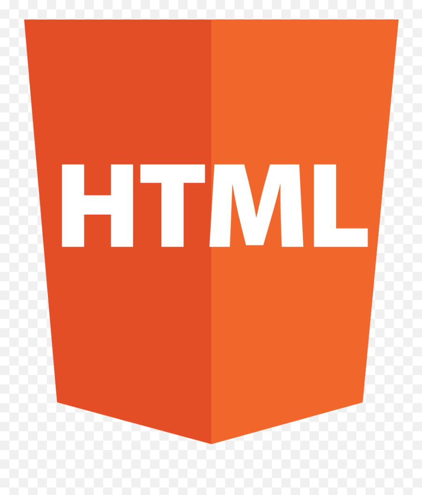
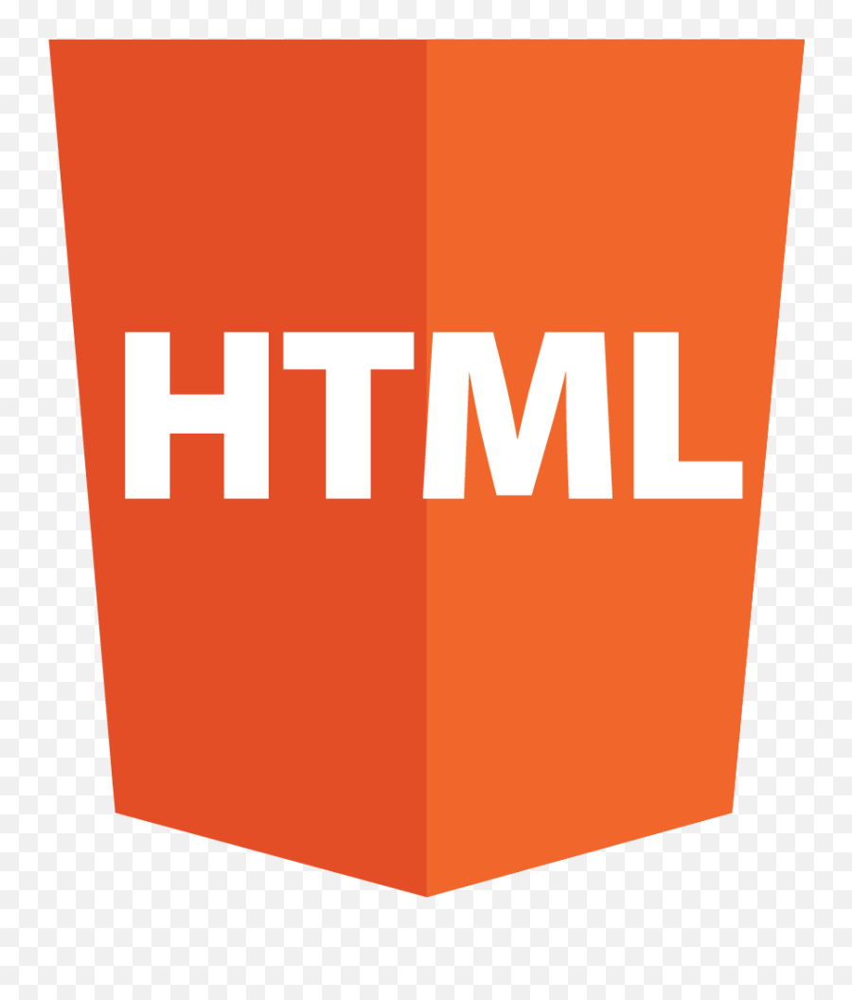

mi prtafolio
hola, soy angel y este es mi portafolio web, actualmente manejo distintas tecnologias, como
lo puede ser pyton,
y desarrollo web como lo es (html, css y javascript) y base de datos.
actualmente tengo 7 meses dee experiencia.
pyton
actualmente manejo pyton, dde distintas manera como lo es para base de datos, crear pequenos programas, y pequenas aplicasiones entre otras cosas.
php
hola, tambien manejo lo que es base de datos como lo es (mysql, php, y phpmyadm), actuualmente
con estas tecnologias,
e creado loggn, paginas de registro etc.
tambien e creado proyectomas ma sinteresantes, como lo son (blogs de publicaciones,
sistemas de likes, comentraios, sistema de mensajeria etc.)
HTML, CSS
tambien manejo lo que es html, css, estas tecnologias las e usado, para programar tambien
los proyectos anteriormente mensionados, y actualmente tengo 6 meses de experiencia.
javascript
e manejado, javascript, para crear chatbots, usando la api de open ai, minijegos, funsiones etc.
 
